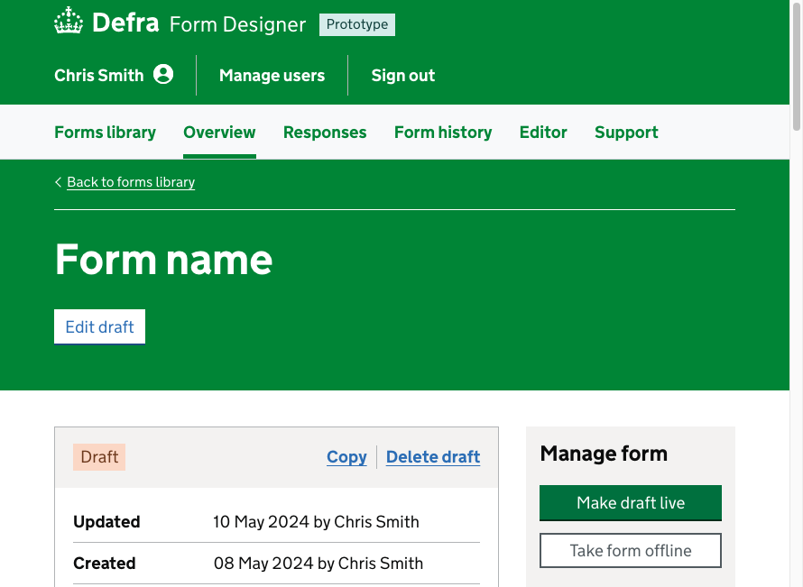
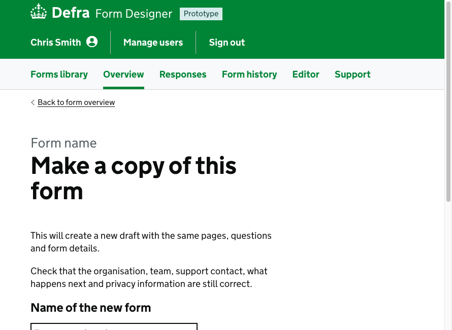

Visual flow with live prototype screenshots. Persona: Chris (form designer).
Critical path: choose draft or live source → name the copy → land on new draft.
1. Form overview — discover Copy
Entry

User action
Opens form overview
Clicks Copy on Draft and/or Live
Thought
“Should I copy the draft or the live version?”
2. Make a copy — name and checks
Moment of truth

User sees
New draft with same pages, questions and details
Prompt to check org, team, support, next steps, privacy
Suggested name with (copy)
Decision
Make a copy, or Cancel
Cancel
Return to original form overview — no change
Make a copy
System clones into a new draft; never inherits live status